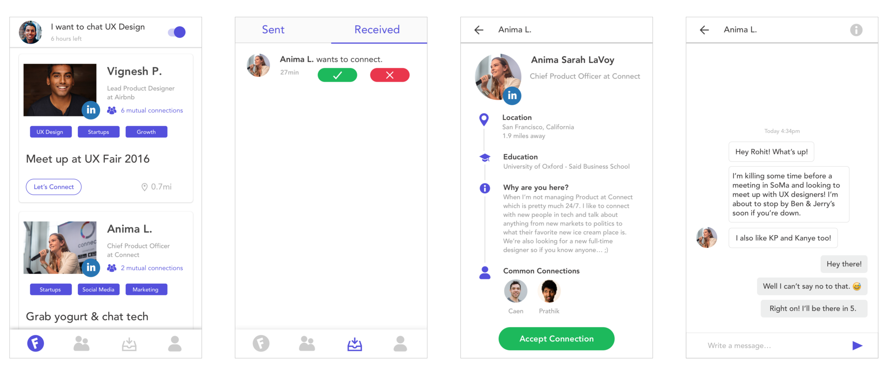
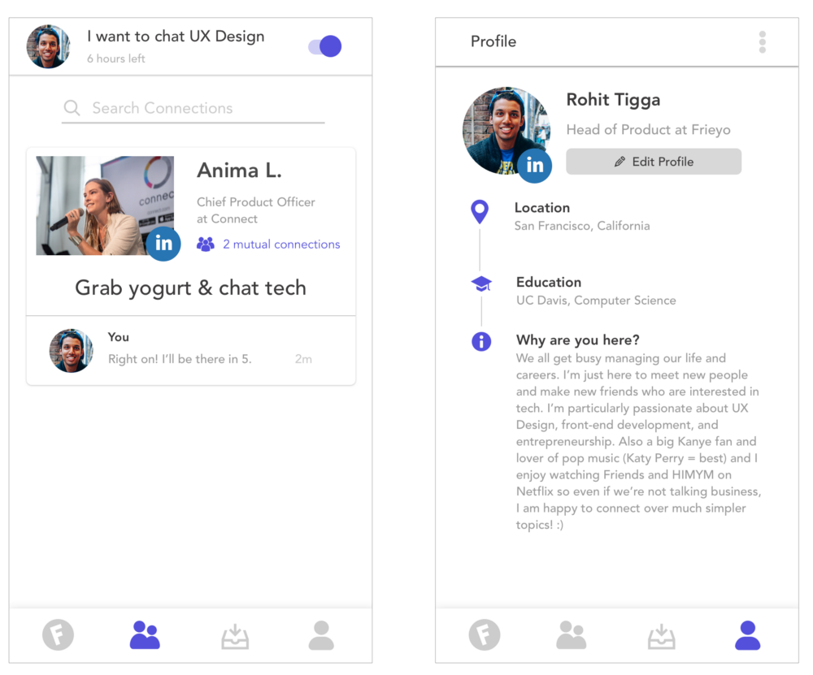

Frieyo is a prototype for an iOS app I am coding right now. The goal is to connect people with similar professional goals and interests.
We have Tinder for swiping right and "dating", but why isn't there a product for meeting professional nearby people who can benefit your career and add real value to your life. Frieyo is an easier way to meet similar professionals near you.
Problem
It’s hard to meet people who have similar professional interests or goals.
I go to a lot of networking events, hackathons, and meet ups. Usually I end up introducing myself to at least 50+ people, but at the end of the day I probably only click with one person, maybe a person who’s also a designer or developer or someone who’s into tech, design, social good or the same interests as me.
This caused me to ask this question: why can’t there be an easier way to meet like-minded professionals near me?
I always browse profiles on LinkedIn of amazingly talented people and think to myself that it would be so cool to meet that person. There are a slew of dating apps and open ended apps for making “friends”, but there nothing that enables people to meet professionals and network, which is career-oriented and has a clear purpose and goal.
I love meeting people and other professionals in my space, but it’s hard to find that one person who you click with. Whether you’re looking for a person to work on a project with, you’re looking for a job, trying to start a business, or maybe just trying to chat or grab coffee with.
Goal
Connect people who have similar professional interests or goals.
Context
The way professionals meet people after college is usually through work, asking for introductions, or directly through their network.
Target User
19–30 year olds who are professionals working in tech.
Value Prop
- People on the app will have similar interests and goals to you; highly personalized.
- Posts only lasts 6 hours and appear in a feed, if you connect with someone you can meet always with them in the near future.
- No Swiping Bullshit like Tinder.
Key Features
- Request to meet with people who are open to meeting, no swiping left or right.
- Post a location-based message to nearby people who are open to meeting in the near future.
- Posts disappear after 6 hours to only see relevant people.
- Connect with LinkedIn. Ensures valid information.
I decided to go with a benefits-oriented value proposition for the following reasons:
- Give an overview
- Show the value
- Show what they need to do to get to the next step
Connecting with LinkedIn allows the user to import all their professional information to reduce the effort of inputting information. Selecting interests is quite a broad stage for now. I plan to replace it with relevant professional and tech fields like UX, Marketing, Design, Finance, Front-end, Back-end, etc. so people can connect with those professional interests. After that, the best way to learn is by doing, which is why I end with the post screen.
The main feed (1st screen) is a feed with all user within a 25 mile radius who have posted in the past 6 hours. For example, Anima wants to grab yogurt and chat about tech. We can request to connect, chat and meet up! This could be great for recruiter or founders trying to hire the next rockstar at their company. Everything is designed around getting relevant information from potential people and having quick and relevant meetings.
After the user connects with the person, then you can always view made connections in the second tab of the app and resume the chat.
What’s next?
Right now this is just a project I’m hacking on but I’m optimistic about it’s potential. This product has the potential to give every individual in the world a stronger professional network, a better support system, and increased job opportunities.